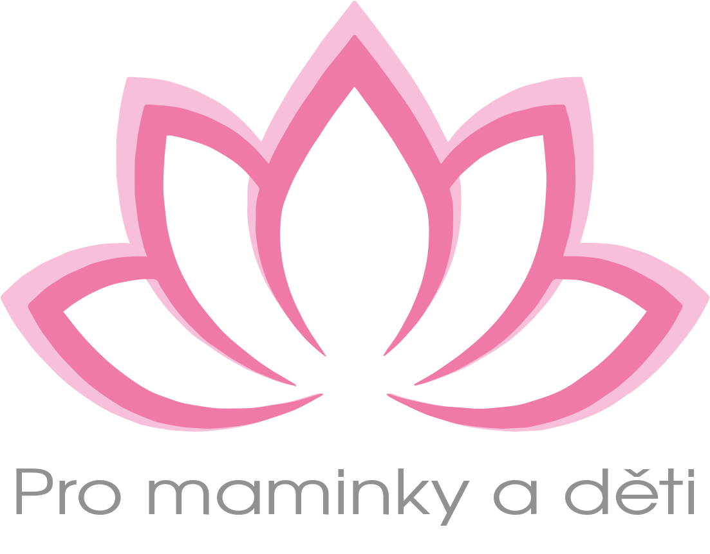

Stránky pro ženy, které hledají zdraví a dobrý pocit ve svém těle.
Terapie pro ženy: Používám léčebné hmaty s cílem uvolnit zvýšené svalové napětí, uvolnit kloubní blokády a aktivovat oblasti těla v útlumu pomocí cvičení. Terapie vám může pomoci například v těchto situacích: - při snaze otěhotnět (problémy s početím, příprava na otěhotnění)
- v dospívání (úprava držení těla, kompenzace růstových změn)
- v šestinedělí, po porodu (Upravuje tělesné změny způsobené těhotenstvmí a porodem.)
- při bolestech (menstruační, pohybového aparátu, způsobené poruchou v nervovém systému, aj.)
- při snaze změnit svoje tělesné vnímání, zvýšit pohyblivost, pružnost a stabilitu
Využívám těchto konceptů: - odkaz o Mně
Cena terapie je 850,- Kč/ 60 min.
Terapie dětí: Je individuální a hravou formou. Je pro děti různých věkových kategorií (od batolat po dospívající). Vychází z diagnostiky pohybového projevu dítěte. U mladších dětí stanovuji vývojový věk. Je zaměřena dle potřeb dítěte například na
- rozvoj pohybových dovedností
- rozvoj orientace v prostoru a celotělového schématu
- podpora vnímání těla
- rozvoj jemné a hrubé motoriky
- podpora symetrie těla a upravení držení těla (u dětí se skoliózou a vadným držením těla)
Využívám terapeutických konceptů. (odkaz o mně)
Cena terapie je 850,- Kč/ 60 min.
Obrázek vedle Cvičení
Cvičení pro děti: viz výše Regenerace a rekondice
Cvičení vede k harmonii těla a mysli. Provozováním cvičení můžete předcházet problémům (bolestem, onemocněním pohybového aparátu, nadváze) a léčit již existující. Zvýší se vaše sebeúcta a sebedůvěra. Sestava cviků je individuální dle vstupního vyšetření klientky (pohledem).
Těšit se můžete na:
Jógové asány,
Posilování a protahování svalů,
Cvičení pánevního dna,
Cvičení s uvědoměním tělesného schématu (dle M. Feldenkraise),
Dechová cvičení.
Cvičení je vhodné např. v těhotensví, v šestinedělí, při břišní diastáze, při potížích s otěhotněním, při bolestivé menstruaci a v klimakteriu.
Cena terapie je 850,- Kč/ 60 min.
Obrázek vedle Skupinové cvičení
Pro ženy
Skupinové cvičení je otevřené všem ženám. Můžete chodit pravidelně, nebo příležitostně. Přijďte zažít podporu ženského kruhu. Jsou vítány ženy v jakémkoliv životním období a jakémkoliv věku...
Ve skupinovém cvičení se zaměřuji na
jógové asány,
tanec,
sdílení.
Jako fyzioterapeutka vnímám provádění cviků ženami a opravuji je. Zohledňuji při výběru cviků daný stav ženy (těhotenství, po porodu, atd.).
Využívám tance pro uvolnění emocí a celkové naladění se na sebe i na skupinu. Jde o individuální projev, který je neuvěřitelně osvobozující a ozdravný.
Cena za jednotlivou lekci: 200,- Kč, za pololetí 1800,- Kč
Pro děti
Cvičení pro děti mladšího předškolního věku (4-6 let)
Hravou formou všestranný rozvoj těla,
kompenzace nedostatku pohybu zábavou,
navíc prevence vadného držení těla a skolióz.
Menší skupinka 4-5 dětí, individuální přístup.
Cena za půlroku je :
Obrázek vedle Poradenství
Chcete svou situaci změnit a zatím nevíte, jak na to. Nabízíme vám poradenství
V oblasti zdravého životního stylu - Bc. Eva Hlušičková
V oblasti..........- Lavy
Cena konzultace je stanovena terapeutem a je vám řečena při telefonickém objednání.